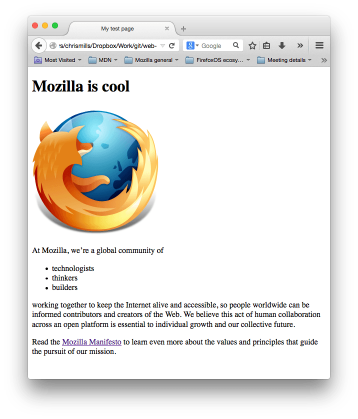
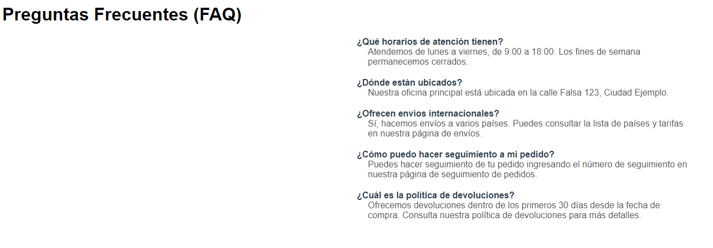

LM 1DAW · Tarea
HTML 1..4
Instrucciones
Resuelve los ejercicios 1 a 4 siguiendo los enunciados y las referencias.
Ejercicio 1
Primera página: Mozilla
Reproduce en HTML la página de la captura. Incluye el encabezado, la imagen, los párrafos, la lista y el enlace al manifiesto de Mozilla.

Ejercicio 2
Preguntas frecuentes
Reproduce en HTML la página de preguntas frecuentes de la captura. Conserva el título, las cinco preguntas y sus respuestas.

Ejercicio 3
Elementos básicos de una página
Crea un documento HTML que contenga:
- Un título en la pestaña del navegador.
- Un encabezado principal para el título de la página.
- Al menos dos párrafos con texto.
- Un enlace externo que abra una página en una pestaña nueva.
- Una imagen con un texto alternativo adecuado.
- Una lista desordenada con al menos tres elementos.
Ejercicio 4
Dimensiones de una imagen
Modifica el elemento <img> del ejercicio anterior. Utiliza los atributos width y height para cambiar las dimensiones con las que se muestra la imagen.
Entrega
Adjunta un ZIP con las carpetas, los archivos HTML, las imágenes y los demás recursos utilizados.
Materiales de la tarea
No hay archivos adjuntos en esta tarea.